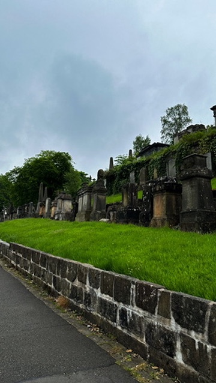
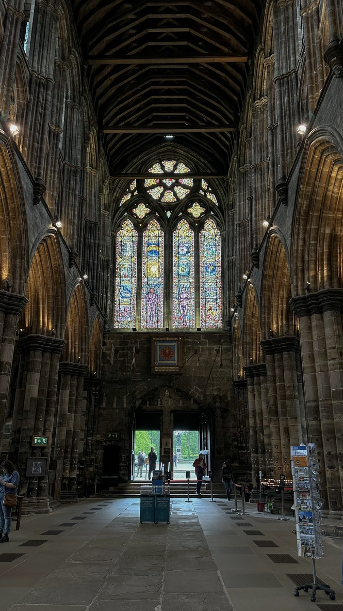
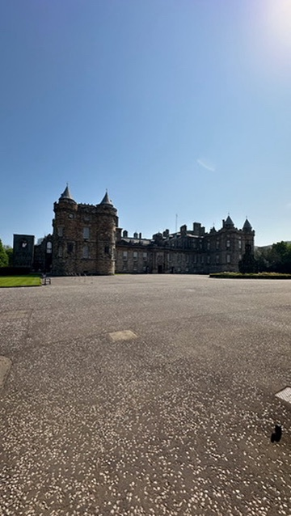
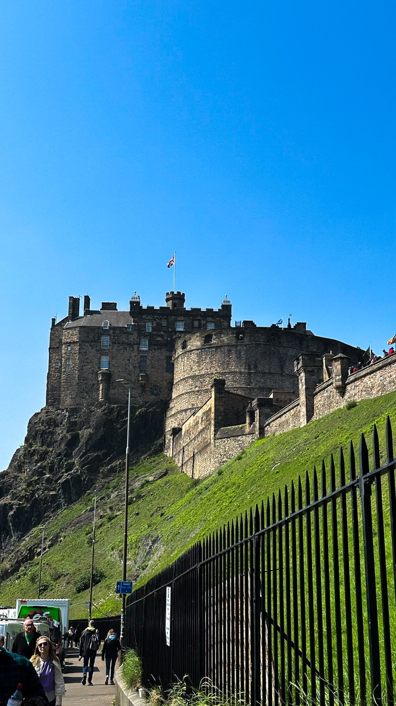
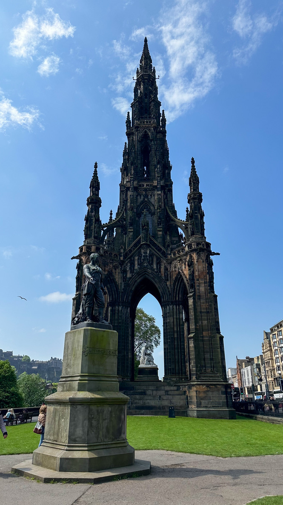

Glasgow & Edinburgh
Glasgow and Edinburgh are two of Scotland's most beloved cities, each offering a unique blend of history, culture, and modern attractions. Glasgow is known for its vibrant arts scene and industrial heritage, while Edinburgh is famous for its stunning castle and rich literary tradition. Both cities are must-visit destinations for travelers seeking a mix of old-world charm and contemporary culture.
Top Attractions
- Glasgow Cathedral: A stunning medieval cathedral with intricate architecture and a rich history.
- Edinburgh Castle: A historic fortress perched on Castle Rock, offering panoramic views of the city.
- The Royal Mile: A historic street in Edinburgh lined with shops, restaurants, and landmarks.
- Glasgow Necropolis: A historic cemetery with impressive architecture and beautiful gardens.
- Holyroodhouse Palace: A historic royal residence in Edinburgh with beautiful gardens and exhibitions.
- Scott Monument: A tall stone monument in Edinburgh dedicated to Sir Walter Scott.
Local Cuisine
Scotland is known for its hearty and flavorful cuisine. Don't miss trying traditional dishes like haggis, neeps and tatties, and Scottish salmon. Both Glasgow and Edinburgh offer a variety of restaurants serving local specialties, as well as international cuisine to suit all tastes.
Top Restaurants
- Café Andaluz: A vibrant restaurant in Glasgow offering a mix of Spanish and Scottish flavors.
- La Vita: A popular restaurant in Edinburgh offering Italian cuisine.
- Number 16: A cozy eatery in Edinburgh known for its seasonal and locally sourced dishes.
A Few Photos




